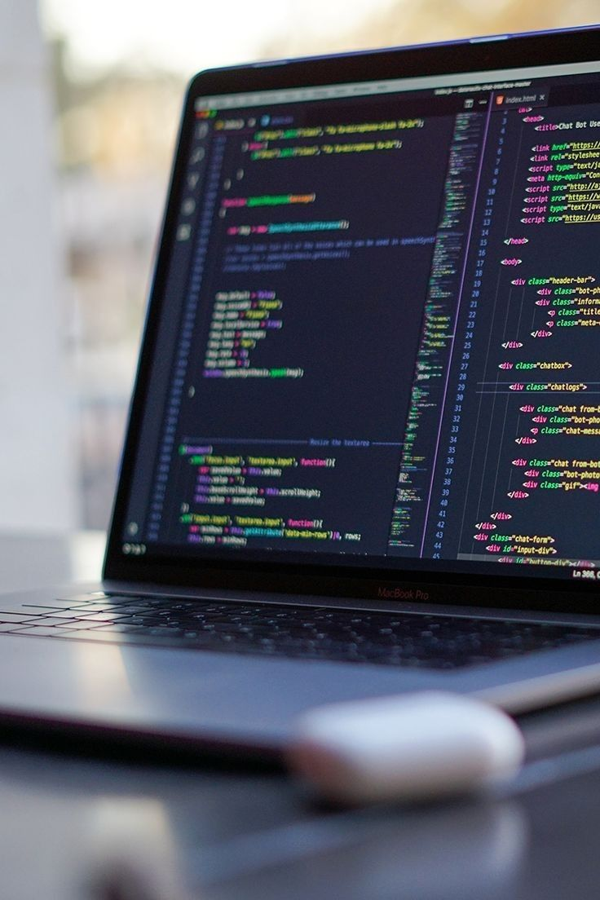
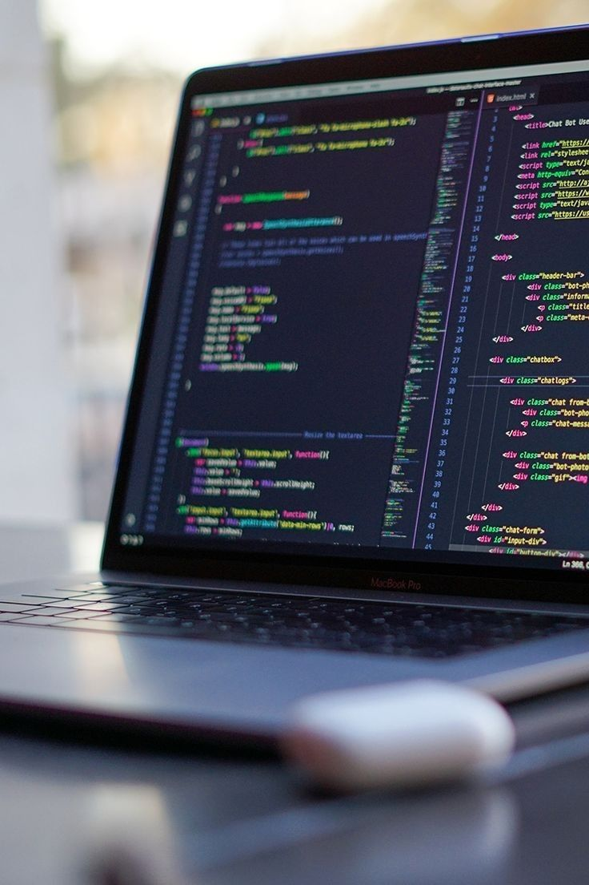

Selamat datang di website pemrograman rekayasa prangkat lunak
 

Rekayasa perangkat lunak adalah disiplin yang berkaitan dengan pengembangan, perancangan, pemeliharaan, dan manajemen perangkat lunak. Ini melibatkan proses sistematis dalam membangun aplikasi atau sistem perangkat lunak dengan menggunakan prinsip-prinsip teknik, metodologi, dan alat yang tepat. Tujuan utamanya adalah untuk menghasilkan produk perangkat lunak yang berkualitas, dapat diandalkan, mudah dipelihara, serta memenuhi kebutuhan pengguna dan perusahaan yang memanfaatkannya. Proses ini meliputi tahap-tahap seperti analisis kebutuhan, perencanaan, pengkodean, pengujian, implementasi, dan pemeliharaan